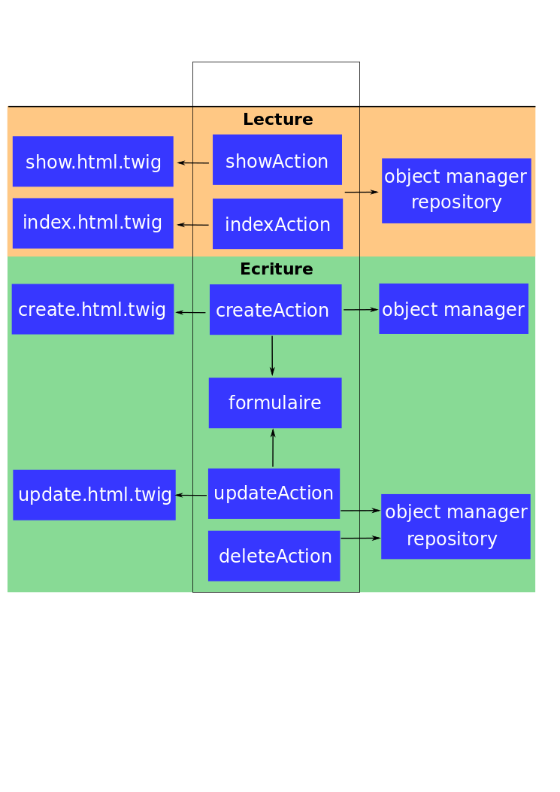

Développer avec le SyliusResourceBundle
Qui suis-je ?
Arnaud Langlade (@_aRn0D)
Développeur Symfony chez Clever Age
www.clever-age.com / @CleverAge

Sylius

Framework E-commerce créer par Paweł Jędrzejewski
Ensemble de bundles Symfony et composants PHP e-commerce
Sylius Starndard Edition
Quelques chiffres : ~200 contributeurs / ~1700 stars
SyliusResourceBundle
Le SyliusResourceBundle vous permet de gérer rapidement et simplement vos ressources et de les exposer via API REST.
Il n'y a pas que des composants e-commerce dans Sylius !
Gestion des ressources? Z'avez dis CRUD?
 CRUD = Create, Read, Update, Delete
CRUD = Create, Read, Update, Delete
Un CRUD, comment ça fonctionne?

Pourquoi la création de ce bundle?
- Le back office de Sylius est composé d'énormement de CRUD
- Eviter la duplication de code parce que c'est le mal
- Développer plus vite en automatisant des tâches
Une solution? ResourceController?
- C'est un contrôleur générique
- Plus de code, il est intialisé via une configuration
- Il étend the FOSRestController
- Il permet de personnaliser les actions
- Solution plus flexible
Création du ResourceController :
Utilisation du EventDispatcher (répartiteur d'évènement) :
Quels sont ORM/ODM supportés ?
- Doctrine ORM : Sylius l'utilise par défaut
- Doctrine Phpcr-ODM : Sylius intègre le CMF pour gérer des contenus
- Doctrine Mongodb-ODM (en partie)
- Bientôt surement plus !
API
La sérialization est faite grâce au JMSSerializerBundle et BazingaHateoasBundle
{
"page": 1,
"limit": 10,
"pages": 1,
"total": 1,
"_links": {
"self": {
"href": "/customer?page=1&paginate=10"
},
"first": {
"href": "/customer?page=1&paginate=10"
},
"last": {
"href": "/customer?page=1&paginate=10"
}
},
"_embedded": {
"items": [
{...}
]
}
}
Attention!
Ce n'est pas un admin generator!
Il faut créer vos formulaires, vos templates et le routing (pour le moment!)
Créer son CRUD en quelques minutes !
Créons un CRUD pour gérer des clients (customer) dans boutique en ligne.
Configurons nos ressources
sylius_resource:
resources:
myapp.customer:
driver: doctrine/orm
classes:
model: AppBundle\Entity\Customer
repository: Sylius\Bundle\ResourceBundle\Doctrine\ORM\EntityRepository
templates: WebBundle:Backend/Customer
myapp.adresse:
# ...
Mais que se passe t'il ?
$ php app/console container:debug | grep customer
myapp.manager.user alias for "doctrine.orm.default_entity_manager"
myapp.controller.user container Sylius\Bundle\ResourceBundle\Controller\ResourceController
myapp.repository.user container Sylius\Bundle\ResourceBundle\Doctrine\ORM\EntityRepository
$ php app/console container:debug --parameters | grep customer
sylius.config.classes {"live.user": {...}}
Configurons nos ressources
sylius_resource:
resources:
myapp.customer:
driver: doctrine/orm
classes:
model: AppBundle\Entity\Customer
controller: AppBundle\Controller\CustomerController
repository: AppBundle\Repository\CustomerRepository
templates: WebBundle:Backend/Customer
Création du modèle
namespace AppBundle\Entity;
/**
* @ORM\Entity
* @ORM\Table(name="customer")
*/
class Customer
{
/**
* @ORM\Column(type="string", length=100)
*/
protected $firstName;
/**
* @ORM\Column(type="string", length=100)
*/
protected $lastName;
}
Créons notre formulaire
class CutomerType extends AbstractResourceType
{
public function getName()
{
return 'myapp_customer';
}
}
- Pattern du nom de formulaire : nomApplication_resource
- Le formulaire doit être défini en tant que service
- AbstractResourceType permet de configurer le data_class et le validation_group
Créons nos templates
Création ou modification d'une resource
Page détail d'une resource
Listing de resources
{% for user in users %}
{{ user.fistname }} {{ user.lastname }}
{% endfor %}
Configurons nos routes
live_user_index:
pattern: /customer
defaults:
_controller: myapp.controller.customer:indexAction
- Pattern des clés des routes : nomApplication_resource_action
- Ne pas oublier que les controleurs sont définis en tant que service
- Actions : index, show, create, update, delete, moveUp, moveDown, revert ou updateState
Et paf ! ça fait des Chocapics !
Notre CRUD est Prêt à l'emploi !! On crée notre API ?
Exposer ses customers via API REST
Configurer le FOSRestBundle
fos_rest:
format_listener:
rules:
- { path: '^/', priorities: ['html', 'json'], fallback_format: html}
Le ResourceController retourne le données dans le format souhaité
GET /customer/57 HTTP/1.1
Host: myshop.com
Accept: application/json
Construire une API from strash ?
- Génération automatique des formulaires et du routing
- Lionframe (Rapid RESTful API Development)
Allons plus loin !!
Il est possible de configurer le comportement des méthodes du ResourceController
Configurer les methodes du ResourceController
Ajouter une entrée _sylius dans defaults des routes
live_customer_create:
defaults:
_sylius:
template: LiveBundle:Backend/User:custom_create.html.twig
Rédiriger l'utilisateur
live_user_create:
pattern: /new
methods: [GET, POST]
_controller: live.controller.user:createAction
_sylius:
redirect: live_user_index
# Ou
redirect:
route: live_user_index
parameters: { name: resource.name }
Récupérer des données dans la BDD
live_user_index:
pattern: /
methods: [GET]
defaults:
_controller: live.controller.user:indexAction
_sylius:
repository:
method: findCustomerByCity
arguments: [$city]
Lister ses ressources
live_user_index:
pattern: /
methods: [GET]
defaults:
_controller: live.controller.user:indexAction
_sylius:
# Filtre
criteria:
company: "Clever Age"
# Trie
sorting:
updatedAt: asc|desc
# Paginate
paginate: 50
Expression Language
app_user_index:
path: /customer/orders
methods: [POST]
defaults:
_controller: app.controller.order:indexAction
_sylius:
method: findOrderByCustomer
arguments: ['expr:service("security.context").getToken().getUser()']
Configuration globale
sylius_resource:
settings:
paginate: $paginate
default_page_size: 10
sortable: false
sorting: $my_sorting
filterable: false
criteria: $my_criteria
Créer son bundle
Besoin de gérer vos utilisateurs dans plusieurs applications, créer un bundle pour mutualiser votre code !
Mapping de vos modèles
Déclarer votre classe en tant mapped-superclass
Le mapping est réécris (évènement loadClassMetadata) pour permettre d'étendre facilement vos modèles
"Doctrine Mapping Driver"
Fournir plusieurs implementations Doctrine pour un model
class UserBundle extends AbstractResourceBundle
{
protected function getModelNamespace()
{
return 'Live\Model';
}
protected function getDoctrineMappingDirectory()
{
return 'model';
}
}
Resolve Target Entity Listener
Permet de ne pas écrire en dur les relations entre différentes entités
class UserBundle extends AbstractResourceBundle
{
protected function getModelInterfaces()
{
return [
'Live\Model\UserInterface' => live.model.user.class
'Live\Model\GroupInterface' => live.model.group.class
];
}
}
Ré-écrit les paramètres targetEntity dans le mapping de votre model
Formulaires
- Une entité : entity form type
- Un document : document form type
- Un document PhpCr : phpcr_document form type
- Ajout/suppression d'item
- Mise à jour des items (remote/local)
ResourceChoiceType création d'un form type choice à partir de :
CollectionExtension et son plugin jQuery
Templates
Venez contribuer!
- Merci à tous les contributeurs!
- N'hésister pas à nous soumettre vos PRs...
- ... surtout si vous aimez faire de la doc :D !
Merci! Questions ?
Arnaud Langlade
Twiter @_aRn0D
Sylius : www.sylius.org